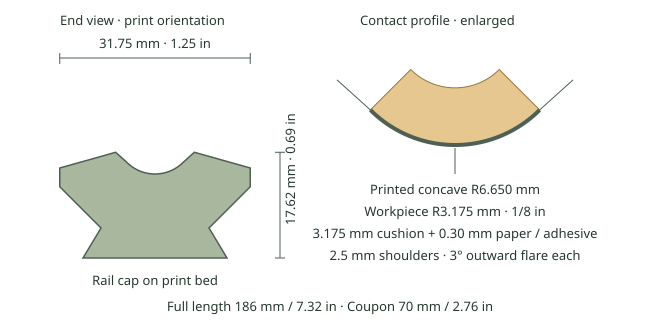

R3 · A centered roundover shoe for a 1/8-inch POWERTEC cushion and sanding at 45°.
Drag to orbit · Scroll to zoom

| Full shoe | 186 × 31.75 × 17.62 mm 7.32 × 1.25 × 0.69 in |
|---|---|
| Coupon length | 70 mm · 2.76 in |
| Workpiece radius | 3.175 mm · 1/8 in |
| Printed groove radius | 6.650 mm |
| Cushion thickness | 3.175 mm · 1/8 in nominal |
| Assumed abrasive thickness | 0.30 mm, including adhesive |
| Shoulders | 2.5 mm long · 3° outward flare per side |
| Connection | Existing dovetail and 90° tapered seat |
| Material / layers | PLA · 0.20 mm · 5 walls · 15% infill |
Print rail-cap-down with the groove upward, without supports. Fit one layer of POWERTEC 71014 mat into the curved seat. Start with an approximately 8 mm wide cushion strip and trim its installed edges at the ends of the curve. Apply approximately 5 mm wide sandpaper over the cushion; do not stretch it across the opening. Leave both short shoulders bare; the material beyond them is cut back to clear the board faces. Hold the plane at 45° to the two board faces and move along the edge.
Print the coupon first. It uses the same cross-section and fits the existing 70 mm coupon carrier and tapered knob. The full shoe uses the existing 186 mm carrier and tapered knob.
Download 3MF · Fit coupon · Editable STEP
Fit against routed wood has not been physically tested. The groove allows the full 3.175 mm nominal cushion thickness plus 0.30 mm for paper and all adhesive layers. Cushion compression is unmeasured: test on routed scrap under light sanding pressure before printing the full shoe. Trim the pad or abrasive if either touches the adjoining flats. Intended for a plain quarter-round without a bead or shoulder.